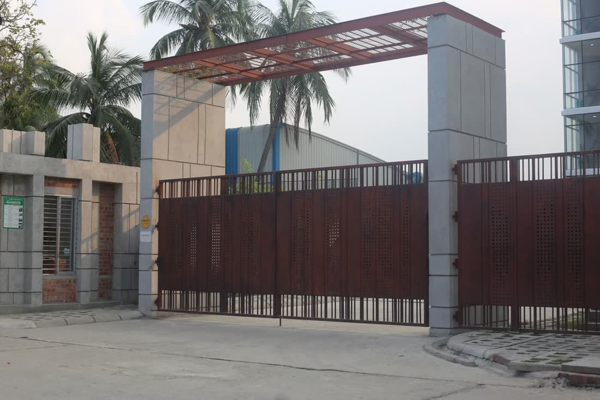
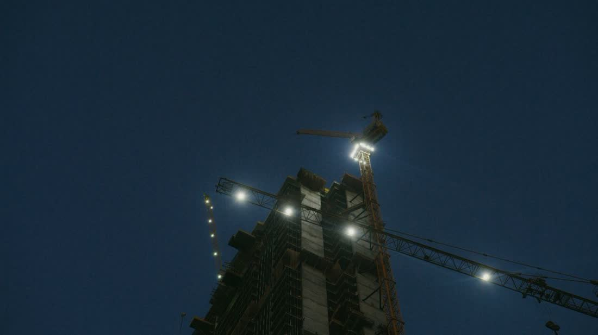
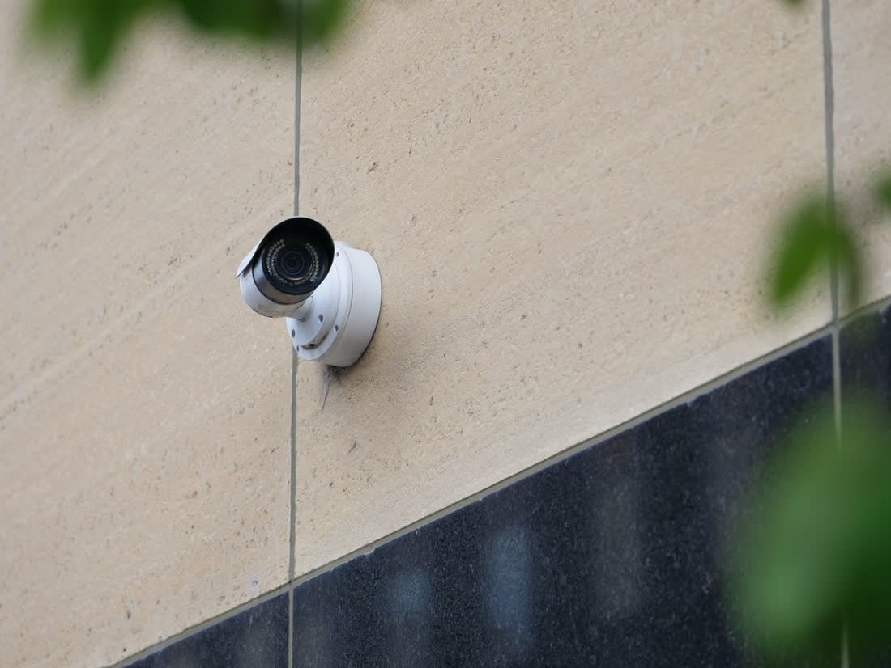
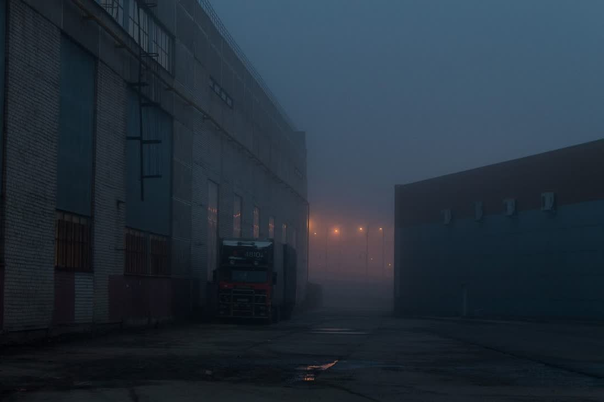

Vigilancia física
Puestos fijos en edificios, countries, comercios y plantas. Consigna escrita, libro de novedades y relevo puntual.
- Turnos de 8 o 12 h
- Libro de novedades digital
- Relevo garantizado
Vigilancia física, control de accesos, rondines y monitoreo para obras, barrios, comercios e industrias de CABA y GBA. Personal uniformado, identificado y supervisado.
Cada objetivo se cubre con un esquema propio: dotación, horarios, consignas y supervisión definidos antes de empezar.
Puestos fijos en edificios, countries, comercios y plantas. Consigna escrita, libro de novedades y relevo puntual.

Registro de personas, proveedores y vehículos. Acreditaciones, planillas y control de ingreso y egreso de materiales.

El rubro donde más se roba: herramienta, cable y materiales. Cobertura desde el pozo hasta la entrega de unidades.

Seguimiento de cámaras desde nuestra central, con protocolo de aviso y verificación antes de escalar.
Fiestas, congresos, deportivos y recitales. Dotación dimensionada por aforo y control de accesos con pulsera o QR.

Recorridas programadas con control de puntos y reporte con hora y foto. Ideal para predios, depósitos y logística.
Nada queda en la palabra: todo servicio arranca con un relevamiento y sigue con supervisión que vos también ves.
Visitamos el objetivo, detectamos puntos débiles y definimos puestos, horarios y consignas.
Dotación, modalidad, costos y alcance en un solo documento. Sin letra chica ni extras sorpresa.
Asignamos al personal, lo capacitamos en la consigna del objetivo y arrancamos en la fecha pactada.
Supervisor en la calle, control de rondines y reporte de novedades. Si algo falla, lo sabés vos primero.
Uniforme institucional azul marino con la rosa de los vientos al pecho y en la manga, y SEGURIDAD · GRUPO POLARIS S.A.S en la espalda. Credencial visible, borceguí reglamentario y equipo de comunicación en cada puesto.
Operamos en CABA y Gran Buenos Aires, con base operativa propia y supervisores asignados por zona. Si tu objetivo queda fuera del radio, igual escribinos: coordinamos con dotación destacada.
Tres preguntas y te devolvemos la dotación sugerida. Después lo ajustamos en el relevamiento, sin compromiso.
La estrella polar marca el norte cuando no hay otra referencia. Eso es lo que hacemos en el objetivo de cada cliente.
Tenemos personal de reserva asignado por zona. Si un vigilador falta, el puesto se cubre igual: no se descubre nunca.
Supervisores recorriendo los objetivos, control de rondín y parte diario. No es un teléfono que nadie atiende a las 3 de la mañana.
Alta laboral, ART y seguro de responsabilidad civil. Te pasamos la documentación antes de empezar.
Cada puesto tiene su consigna específica: qué se controla, qué se registra y a quién se avisa según el caso.
Recibís el resumen de lo que pasó en tu objetivo, con hora y detalle. Si hubo un evento, lo ves documentado.
Arrancás con un puesto nocturno y sumás cobertura a medida que crece la obra o el predio, sin rearmar el contrato.
Con el relevamiento hecho, en general el puesto arranca dentro de las 48 h. Para urgencias tenemos personal de reserva y podemos cubrir el mismo día según la zona.
El esquema habitual es mensual, pero cubrimos servicios puntuales: un evento, una mudanza, un corte de obra o un fin de semana largo.
Sí. Todo el personal está registrado, con ART y seguro de responsabilidad civil. La documentación se entrega al cliente antes de iniciar el servicio.
El esquema estándar es vigilancia sin armas, que es lo que la mayoría de los objetivos necesita. Si el caso lo requiere, se evalúa en el relevamiento y se define por escrito.
Sí, si el sistema permite acceso remoto. Lo revisamos en el relevamiento y, si hace falta, te decimos qué conviene sumar sin venderte un equipo de más.
Con control de rondín por puntos: el vigilador registra cada recorrida con hora, y el supervisor hace visitas sin aviso. Todo queda en el parte diario.
Te hacemos el relevamiento sin cargo y te pasamos la propuesta por escrito. Sin vueltas y sin compromiso.